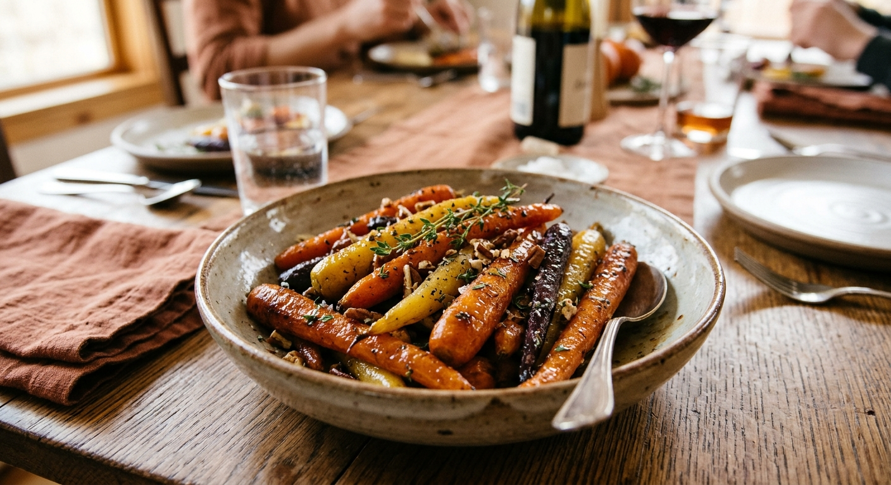

Maple Roasted Carrots

Roasting brings out the natural sweetness of carrots, and a drizzle of real maple syrup turns them glossy and caramelized. They look beautiful on a holiday table and take almost no effort.
The syrup goes on partway through roasting so it glazes the carrots instead of burning.
Ingredients
- 2 lb carrots, peeled and cut on the diagonal into 1/2-inch thick pieces
- 2 tbsp olive oil
- 2 tbsp pure maple syrup
- 1/2 tsp salt
- 1/4 tsp black pepper
- 1 tsp fresh thyme leaves
- 1 tbsp chopped fresh parsley
Instructions
- Preheat the oven to 425°F (220°C). Line a large rimmed baking sheet with parchment.
- Toss the carrots with the olive oil, salt and pepper and spread in a single layer.
- Roast for 15 minutes.
- Drizzle with the maple syrup, add the thyme and toss. Roast 10 to 15 minutes more, until tender and browned at the edges.
- Sprinkle with parsley and serve warm.
Ingredient Notes and Substitutions
Carrots
Use regular carrots or rainbow carrots. Cut thick pieces so they do not dry out, and cut evenly so they finish together.
Maple syrup
Use real maple syrup. Pancake syrup is flavored corn syrup and will not caramelize the same way.
Herbs
Fresh thyme is best, but a pinch of dried thyme works.
Tips for Success
- Do not crowd the pan or the carrots will steam instead of roast.
- Add the syrup partway through to prevent burning.
- Halve very thick carrots lengthwise so they cook evenly.
Variations
- Add 1 tbsp butter with the syrup for a richer glaze.
- Finish with a squeeze of lemon or a sprinkle of toasted pecans.
- Add a pinch of cinnamon or cayenne.
Storage and Make-Ahead
Refrigerate leftovers for up to 4 days and reheat in a 400°F oven until warm. You can peel and cut the carrots a day ahead and store them in the refrigerator, then roast just before dinner.
Frequently Asked Questions
Can I use baby carrots?
Yes, whole baby carrots work. Roast them about the same time, but check for doneness.
Can I use honey instead?
Yes, honey works in the same amount.
Why are mine not browning?
The pan may be crowded or the oven too cool. Use a large pan and make sure the oven is fully preheated.